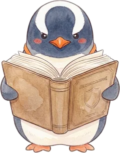
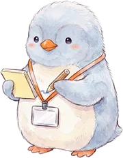
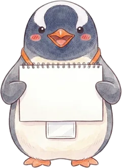
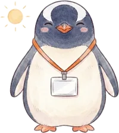
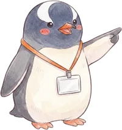
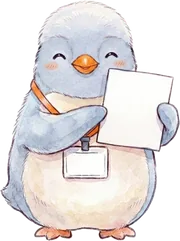
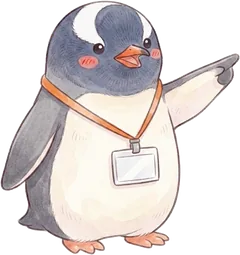
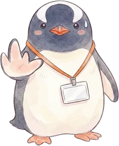
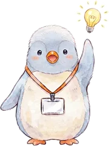

About
なおのこと
「この判断でいいのか」と、一人で悩んできました。 学校に事務職員は私一人。近くの先輩にすぐ聞けるとも限りません。
迷ったところを、根拠までさかのぼってnoteに書いています。 私自身が思考を整理するための場所でもあります。 同じように迷う方と、一緒に前に進めたらうれしいです。
制度改正や通知は、思わぬところから飛んできます。 「あれ、話題になっていますよね」と振られて、まったく知らずに焦ったことが何度もありました。 かといって発信元はばらばらで、探すだけで時間がかかります。 そこだけでも仕組みにしたくて、週に一度「学校事務ウィークリー」を出しています。

Weekly
学校事務ウィークリー
週に一度、五分で追いつく。学校事務と教育まわりのニュースを、実務メモ付きで1枚に。
最新号 次期学習指導要領の「審議まとめ」公表、11月5日まで意見募集 — 調整授業時数制度や「情報」の新設 PDFをひらく →
Notes
書いていること
noteに78本（2026年10月10日時点）。実務の領域ごとに整理しています。数字は本数です。
- 給与13
- 人事8
- 文書管理7
- 財務7
- 人事服務6
- 学校組織運営4
- 学籍4
- 福利厚生3
- 旅費2
- 事務全般2
- 就学支援2
- 公務災害1
- 調査・統計1
- 渉外1
- 学校行事1
- 教科書1


Works
つくったもの
現場で使っている道具と、ペンギンのスタンプ。
- カスハラ判定一覧 保護者や地域の人の言動が、カスハラにあたるかどうか。電話・来校・SNSなど場面ごとに「妥当・グレー・アウト」で引ける早見表 ひらく →
-

学校事務のペンギン【日常編】 ていねいなあいさつから「決裁おりました」「本日定時！」まで。事務室の毎日に寄り添うLINEスタンプ くわしく → -

学校事務のペンギン【実務編】 「供覧します」「起案しました」など、事務職員の一年に寄り添うLINEスタンプ くわしく →


For teachers
先生方へ
事務職員に向けて書いていますが、先生にも関わる制度を扱った回があります。

LINE
最新号は、公式LINEで届きます
毎週末、新しい号が出たらすぐにLINEでお届けします。このページを探しに来なくても、手元で読めます。
